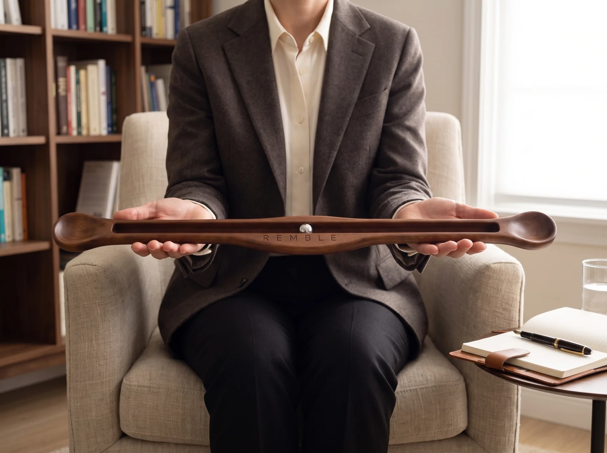

Tek parça ahşap El işçiliği
Grounding. Connection. Regulation.
Topraklanma · Bağlantı · Regülasyon
Remble, tek parça ahşaptan özenle işlenmiş; terapist eşliğinde kullanıma yönelik tasarlanmış, terapötik sürece eşlik eden bir çalışma enstrümanıdır.

Remble nedir
İki ucundan kavranan uzun bir ahşap gövde, boydan boya uzanan bir kanal ve içinde tek bir çelik bilye. Remble sağa ve sola eğildikçe bilye kendi ağırlığıyla akar; göz onu takip eder, el ritmi kurar.
Yalnızca ahşap, çelik ve yerçekimi. Remble, dikkate izleyebileceği sakin ve öngörülebilir bir yol sunar. Görsel takip ve bedensel hareket, dikkatin şimdi ve burada kalmasını destekler.
Remble bir tıbbi cihaz değildir; tanı koymaz, tedavi etmez. Ruh sağlığı alanında çalışan uzmanların seans içi kullanımına yönelik tasarlanmış destekleyici bir araçtır.
Üç odak
Topraklanma. Bağlantı. Regülasyon.

Grounding — Topraklanma
Ahşabın ağırlığı ve avuç içine oturan konkav uçlar, danışanın dikkatini bedene ve şimdi ve buraya geri çağıran fiziksel bir çıpa oluşturur.
Remble’ın ağırlığı, ahşabın dokusu ve bilyenin hareketi bedeni yeniden dikkatin merkezine taşır. Kolların hareket hâlinde kalması, danışanın bedensel temasını sürdürmesine ve bulunduğu ana yönelmesine yardımcı olur.

Connection — Bağlantı
İki ucundan kavranan enstrümanda, bilyenin çift yönlü hareketi göz, beden ve dikkati ortak bir deneyimde buluşturur.
Bilyenin sağ-sol hareketi, çift yönlü uyaranı görsel takip ve bedensel duyumla birleştirir; danışanın şimdi ve burada kalmasını destekler.

Regulation — Regülasyon
Remble’ın ritmik hareketi, görsel takip ve bedensel duyumu aynı anda devrede tutarak danışanın duygusal yoğunluk içinde temasını sürdürmesini destekler.
Kolların hareket hâlinde kalması, kopma ve donma yönündeki tepkilere karşı bedensel katılımı koruyan bir zemin sunar.
Zanaat
Tek parça ahşaptan


Kutu
Tasarımına yakışan bir sunum
Mıknatıslı kapaklı kutu, kadife yatak ve keten saklama kılıfı. Remble bir kutudan çıkar, bir rafta durur, bir masaya konur.


- Remble Enstrüman
- 2 Adet Yedek Çelik Bilye
- Keten Saklama Kılıfı
- Mıknatıslı Sunum Kutusu
Kimler için
Uzman elinde bir araç.
- Psikologlar
- Psikiyatristler
- EMDR ile çalışan terapistler
- Çocuk ve ergen alanında çalışan uzmanlar

İş birliğiyle

Remble, EMDR & Ego State Enstitüsü Türkiye iş birliğiyle sunulmaktadır.
S.S.S.
Sık sorulanlar
Remble bir tıbbi cihaz mı?
Hayır. Remble tanı koymaz, tedavi etmez ve tıbbi cihaz olarak sınıflandırılmaz. Ruh sağlığı alanındaki uzmanların seans içinde kullanması için tasarlanmış destekleyici bir araçtır.
Kutuda yedek bilye var mı?
Evet. Kutuda 2 adet yedek çelik bilye bulunur.
Kliniğim için toplu alım yapabilir miyim?
Evet. Klinik ve kurumlar için toplu tedarik mümkündür. İletişim bölümünden bize ulaşın.
Kliniğiniz için Remble
Ürün, toplu tedarik ve kurumsal kullanım hakkındaki tüm sorularınız için doğrudan bize yazabilirsiniz.
Bize yazın- E-posta
- info@rembletools.com
- @rembletools